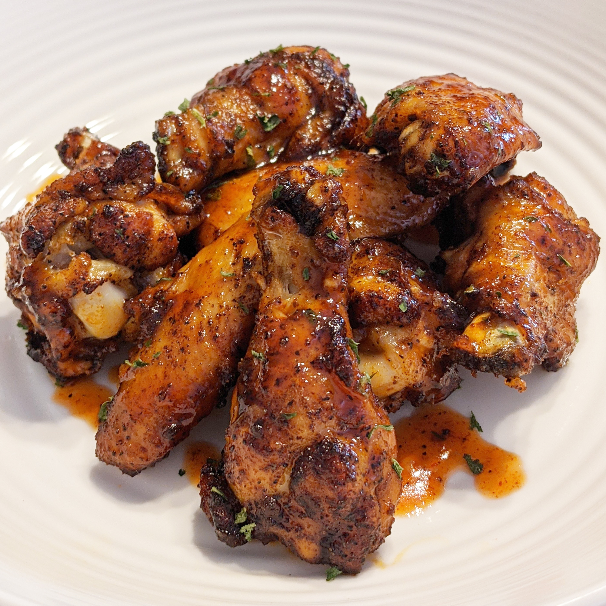

Honey Siracha Chicken Wings

Description
Everybody knows that you absolutely cannot go wrong with wings. What we
have here, however, are not your ordinary batch of wings. These honey
glazed siracha wings will blow you away!
This recipe only takes 5 minutes of prep time and 55 minutes of cook time.
Ingredients
- 2 cups all-purpose flour
- 1 teaspoon sea salt
- 4 teaspoons baking powder
- 2 tablespoons brown sugar
- 2½ pounds chicken wing sections
Honey Siracha Glaze
- ⅓ cup honey
- ⅓ cup sriracha sauce
- 1 tablespoon seasoned rice vinegar
- ¼ teaspoon sesame oil
- 1 pinch sesame seeds, or as desired
Directions
-
Preheat the oven to 425 degrees F (220 degrees C). Line a baking sheet
with aluminum foil and place an oven-proof wire rack over the foil.
-
Whisk baking powder, salt, black pepper, and paprika together in a small
bowl.
-
Place chicken wings in a large bowl. Sprinkle 1/2 of the baking powder
mixture over wings and toss to coat. Repeat with remaining baking powder
mixture, tossing well to coat. Arrange wings on the rack of the prepared
baking sheet.
-
Bake in the preheated oven for 20 minutes. Turn wings and continue
baking for 20 minutes. Turn wings again and bake until wings are browned
and crispy, about 15 minutes more. Transfer wings to a large bowl.
-
For the glaze: Whisk honey, sriracha sauce, rice vinegar, and sesame oil
together in a bowl until smooth. Drizzle glaze over wings and toss to
coat completely.
-
Transfer wings to a serving platter and sprinkle sesame seeds over the
top.